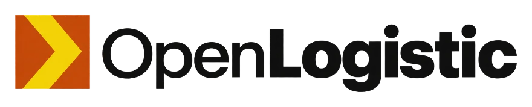
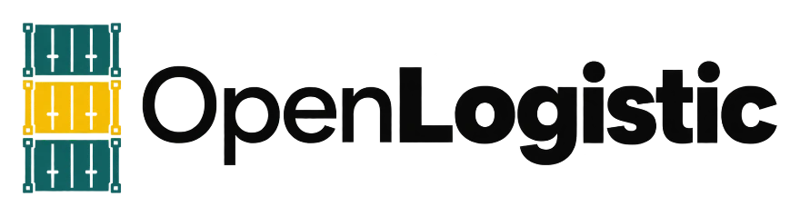
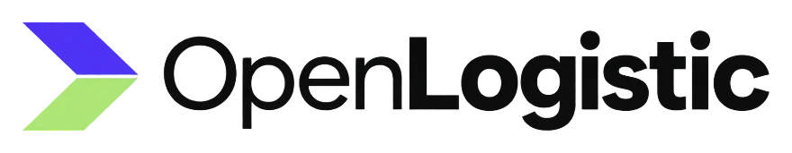

The demo keeps every neutral, every shape and the whole type stack. Each direction below moves
ten CSS variables in src/app/globals.css and nothing else, so the rebrand survives
the next package upgrade untouched and yarn ds:check stays green. Right of each brand field sits the
ad-hoc order list as the app really renders it, repainted by that direction.
--radius 0.625rem, shadow scale, system font stack--primary, --primary-hover, --ring, sidebar active, brand accents
Freight that has to move today, wearing the colour freight already wears when it is urgent.
Taken from air-cargo placards, hi-vis tape and ULD tags. The apron is a place where nothing is decorative and everything has to be legible from twenty metres away.
Honest riskOrange sits two hue steps from the warning status. On a screen full of amber "awaiting carrier" chips, the primary button competes with the one thing it should never compete with.
Ad-hoc orders, repainted
14 open · 4 unassigned · cut-off in 38 min
| Order | Route | Vehicle | Window | Status |
|---|---|---|---|---|
| ORD-4471 | Kraków → Brno | Van 3.5 t | 14:00–16:00 | In transit |
| ORD-4470 | Gdańsk → Poznań | Box 12 t | 09:00–11:00 | Delivered |
| ORD-4469 | Wrocław → Berlin | Van 3.5 t | Tomorrow 06:00 | Awaiting carrier |
| ORD-4468 | Łódź → Katowice | Curtain 24 t | 18:00–20:00 | Quote requested |
| ORD-4467 | Szczecin → Hamburg | Box 12 t | Tomorrow 11:30 | Awaiting carrier |
| ORD-4466 | Rzeszów → Košice | Van 3.5 t | 21:00–23:00 | In transit |
:root { --primary: #C2410C; --primary-hover: #9A3412; --primary-foreground: #FFFFFF; --ring: #C2410C; --sidebar-primary: #C2410C; --sidebar-primary-foreground: #FFFFFF; --brand-lime: #F5D90A; --brand-yellow: #FFB000; --brand-violet: #FF6A1F; --brand-violet-foreground: #0C0C0C; } .dark { --primary: #FB923C; --primary-hover: #F97316; --primary-foreground: #0C0C0C; --ring: #FB923C; --sidebar-primary: #FB923C; --sidebar-primary-foreground: #0C0C0C; }
// paste in the browser console on /backend, then reload localStorage.setItem('om-brand-style-v1', JSON.stringify({ version: 1, logo: null, light: { '--primary': '#C2410C', '--primary-hover': '#9A3412', '--primary-foreground': '#FFFFFF' }, dark: { '--primary': '#FB923C', '--primary-hover': '#F97316', '--primary-foreground': '#0C0C0C' }, })); location.reload();

The calm of a well-run terminal. Deep petrol carries the interface; yard yellow marks only what needs a human.
Taken from port yard markings, stencilled container numbering and terminal signage. That world stays readable in rain, under sodium light, at a distance.
Honest riskTeal is the quietest of the four. On a projector or a washed-out conference screen it loses more punch than orange or cobalt, and a buyer who is half-watching may register it as grey.
Ad-hoc orders, repainted
14 open · 4 unassigned · cut-off in 38 min
| Order | Route | Vehicle | Window | Status |
|---|---|---|---|---|
| ORD-4471 | Kraków → Brno | Van 3.5 t | 14:00–16:00 | In transit |
| ORD-4470 | Gdańsk → Poznań | Box 12 t | 09:00–11:00 | Delivered |
| ORD-4469 | Wrocław → Berlin | Van 3.5 t | Tomorrow 06:00 | Awaiting carrier |
| ORD-4468 | Łódź → Katowice | Curtain 24 t | 18:00–20:00 | Quote requested |
| ORD-4467 | Szczecin → Hamburg | Box 12 t | Tomorrow 11:30 | Awaiting carrier |
| ORD-4466 | Rzeszów → Košice | Van 3.5 t | 21:00–23:00 | In transit |
:root { --primary: #0B6B63; --primary-hover: #08514B; --primary-foreground: #FFFFFF; --ring: #0B6B63; --sidebar-primary: #0B6B63; --sidebar-primary-foreground: #FFFFFF; --brand-lime: #F2C200; --brand-yellow: #7DD3C0; --brand-violet: #34D3C4; --brand-violet-foreground: #0C0C0C; } .dark { --primary: #2DD4BF; --primary-hover: #14B8A6; --primary-foreground: #0C0C0C; --ring: #2DD4BF; --sidebar-primary: #2DD4BF; --sidebar-primary-foreground: #0C0C0C; }
// paste in the browser console on /backend, then reload localStorage.setItem('om-brand-style-v1', JSON.stringify({ version: 1, logo: null, light: { '--primary': '#0B6B63', '--primary-hover': '#08514B', '--primary-foreground': '#FFFFFF' }, dark: { '--primary': '#2DD4BF', '--primary-hover': '#14B8A6', '--primary-foreground': '#0C0C0C' }, })); location.reload();

OpenLogistic as a member of the Open family. Violet runs the interface, lime means something is moving right now.
Taken from the platform's own brand tokens, already sitting in globals.css as --brand-violet and --brand-lime. Nothing new is invented; the existing accents are promoted to lead.
Honest riskViolet plus lime reads software, not freight. A buyer looking for a haulage partner may see a SaaS startup instead, and the lime is bright enough that spending it on anything except "live" will burn it out fast.
Ad-hoc orders, repainted
14 open · 4 unassigned · cut-off in 38 min
| Order | Route | Vehicle | Window | Status |
|---|---|---|---|---|
| ORD-4471 | Kraków → Brno | Van 3.5 t | 14:00–16:00 | In transit |
| ORD-4470 | Gdańsk → Poznań | Box 12 t | 09:00–11:00 | Delivered |
| ORD-4469 | Wrocław → Berlin | Van 3.5 t | Tomorrow 06:00 | Awaiting carrier |
| ORD-4468 | Łódź → Katowice | Curtain 24 t | 18:00–20:00 | Quote requested |
| ORD-4467 | Szczecin → Hamburg | Box 12 t | Tomorrow 11:30 | Awaiting carrier |
| ORD-4466 | Rzeszów → Košice | Van 3.5 t | 21:00–23:00 | In transit |
:root { --primary: #5B3DF5; --primary-hover: #4A30D4; --primary-foreground: #FFFFFF; --ring: #5B3DF5; --sidebar-primary: #5B3DF5; --sidebar-primary-foreground: #FFFFFF; /* the brand trio is already in the file, left as is */ --brand-lime: #B4F372; --brand-yellow: #EEFB63; --brand-violet: #BC9AFF; } .dark { --primary: #BC9AFF; --primary-hover: #A97FFF; --primary-foreground: #0C0C0C; --ring: #BC9AFF; --sidebar-primary: #BC9AFF; --sidebar-primary-foreground: #0C0C0C; }
// paste in the browser console on /backend, then reload localStorage.setItem('om-brand-style-v1', JSON.stringify({ version: 1, logo: null, light: { '--primary': '#5B3DF5', '--primary-hover': '#4A30D4', '--primary-foreground': '#FFFFFF' }, dark: { '--primary': '#BC9AFF', '--primary-hover': '#A97FFF', '--primary-foreground': '#0C0C0C' }, })); location.reload();
The category standard, played straight. No irony, no twist, executed at full fidelity.
Taken from customs seals, forwarder liveries and every logistics platform the buyer has already sat through. Familiarity is the whole proposition: nobody has to work out what this company does.
Honest riskThis is where most of the category already sits, so the demo gets remembered for what it does rather than how it looks. That is a real trade, not a flaw. If the sales story is "we are the safe choice", it is also the right one.
Ad-hoc orders, repainted
14 open · 4 unassigned · cut-off in 38 min
| Order | Route | Vehicle | Window | Status |
|---|---|---|---|---|
| ORD-4471 | Kraków → Brno | Van 3.5 t | 14:00–16:00 | In transit |
| ORD-4470 | Gdańsk → Poznań | Box 12 t | 09:00–11:00 | Delivered |
| ORD-4469 | Wrocław → Berlin | Van 3.5 t | Tomorrow 06:00 | Awaiting carrier |
| ORD-4468 | Łódź → Katowice | Curtain 24 t | 18:00–20:00 | Quote requested |
| ORD-4467 | Szczecin → Hamburg | Box 12 t | Tomorrow 11:30 | Awaiting carrier |
| ORD-4466 | Rzeszów → Košice | Van 3.5 t | 21:00–23:00 | In transit |
:root { --primary: #1D4ED8; --primary-hover: #17369F; --primary-foreground: #FFFFFF; --ring: #1D4ED8; --sidebar-primary: #1D4ED8; --sidebar-primary-foreground: #FFFFFF; --brand-lime: #9DD9FF; --brand-yellow: #C7D9FF; --brand-violet: #6E9BFF; --brand-violet-foreground: #0C0C0C; } .dark { --primary: #7DA2FF; --primary-hover: #5C87F5; --primary-foreground: #0C0C0C; --ring: #7DA2FF; --sidebar-primary: #7DA2FF; --sidebar-primary-foreground: #0C0C0C; }
// paste in the browser console on /backend, then reload localStorage.setItem('om-brand-style-v1', JSON.stringify({ version: 1, logo: null, light: { '--primary': '#1D4ED8', '--primary-hover': '#17369F', '--primary-foreground': '#FFFFFF' }, dark: { '--primary': '#7DA2FF', '--primary-hover': '#5C87F5', '--primary-foreground': '#0C0C0C' }, })); location.reload();
Paste the console block on /backend. The Style Agents panel at /backend/design-system does the same job with a colour picker, and refuses any pair under 4.5:1.
Move the chosen block into :root and .dark in src/app/globals.css. That file is app-owned, so the change survives package upgrades.
/backend/design-system holds 18 component families. It is the cheapest full-surface check that nothing broke, in light and dark.
yarn ds:check && yarn typecheck && yarn lint && yarn build. Tokens-only means the design-system check has nothing to complain about.
Order numbers, counts and routes on this page are illustrative and belong to no real shipment. The four logos were
generated for this proposal and are unvectorised drafts; whichever wins needs redrawing as SVG before it goes near
production. Contrast ratios are measured, not estimated, and every pair clears WCAG AA at 4.5:1 against its own
foreground. Two brand jobs remain after a colour is picked: the app-shell logo, which AppShell already
accepts as a prop, and the login screen.